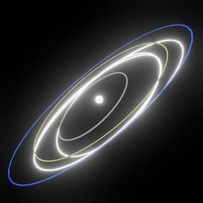
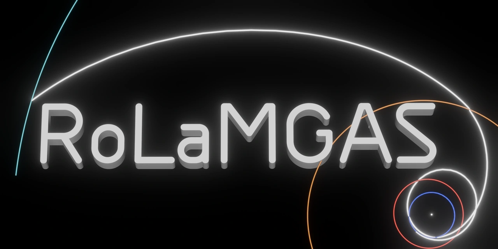

What is C3?
The square of departure hyperbolic excess speed, in km²/s². Lower C3 generally asks less of the launch vehicle. It is energy, not a burn magnitude.

RoLaMGASRobert’s Lambert Multi Gravity Assist SolverMISSION DESIGN / PUBLIC PREVIEW
One destination. Many ways to get there. Explore real saved trajectory candidates, follow their planetary flybys, and find a route worth taking further.
Explore the trajectories01 / THE FLIGHT LIBRARY

A browser gallery of precomputed results.
Your own mission searches run locally in the desktop app.
THE TRAJECTORY EXPLORER
Heliocentric · Ecliptic J2000 · Dates in TDB
E = Earth · V = Venus · Me = Mercury · M = Mars · J = Jupiter · S = Saturn · U = Uranus · N = Neptune · P = Pluto · Er = Eris · X = a resolved Horizons object. dv marks a deep-space maneuver.
COMPARE YOUR OPTIONS
Choose a destination to compare its trajectories.
Each color is an assist sequence. Select a dot to open its trajectory and CSV / XYZV downloads below. Mission limits, including launch years and maximum travel time, apply to the graph and candidate list. Compare C3, flight time, arrival speed and burns to choose the mission that fits your needs. The dwarf-planet category includes Sedna, a dwarf-planet candidate; asteroids includes other trans-Neptunian minor planets.
SAVED TRAJECTORY
Select a candidate to inspect its route.
Preview only. Body markers and orbit paths can be shown independently.
Play the spacecraft alone, or animate planets at the same TDB epoch.
Saved in this browser. Naming does not mark a trajectory validated.
Ideal tangential impulse: Δv = √(C3 + 2μ/r) − √(μ/r), r = body radius + altitude. Excludes finite-burn losses and plane changes; separate from cruise Δv. No parking-orbit propagation is added.
Statistics use distinct saved pass/yellow candidates for this target and sequence, before display filters. σ is the population standard deviation. Percentiles use mid-ranks for ties; a smaller percentile means a lower value. This is a search-biased sample, not a mission rating or a physical validation.
| Event | Calendar date · TDB | Julian date · TDB | Details |
|---|
Preview curves are sampled for display. Playback interpolates between saved points; it does not perform a new propagation. Lambert previews meet at planet centers and should not be used as flyby render files.
Shared pass/yellow labels preserve the original search limits and solver version; they are not independently verified. Curated Lambert examples use stricter admission checks: |ΔV∞| ≤1 m/s, DSMs ≤700 m/s and periapses above their floors. Your desktop app revalidates shared records before reuse. New submissions appear here automatically. Curated audit ↗ · Historical import report ↗
02 / BUILD YOUR OWN MISSION
Choose a destination, try an assist sequence, and watch candidates appear as the search runs. Refine a favorite. Add another flyby. Export your mission to Celestia.
The solver runs on your CPU. No AI service, API key or subscription is required. JPL Horizons supplies new target data; cached ephemerides work offline.
RoLaMGAS / DESKTOP v0.2.3
134 MiB · v0.2.3 · Extract ZIP, then open RoLaMGAS.exe
Mac builds are unsigned. Linux requires glibc 2.35 or newer.
Release notes, GPL source & checksums ↗v0.2.3 connects automatically and checks saved solutions before running a local CPU search. Your sharing checkbox controls future uploads. To connect an older version, paste this address into Community API connection and select Save connection.
https://rolamgas-community.corigarayv.workers.devThe square of departure hyperbolic excess speed, in km²/s². Lower C3 generally asks less of the launch vehicle. It is energy, not a burn magnitude.
Saved DSMs, powered flybys and targeting corrections where modeled. Launch injection and terminal capture are excluded. They require separate budgets.
It measures excess speed relative to the destination. A slower arrival can make capture easier, often at the price of a longer trip or more assists.